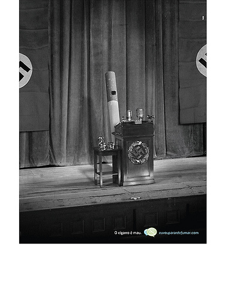

A nova lei antifumo aprovada pela Assembléia Legislativa de São Paulo é inconstitucional segundo diretor jurídico da Associação Brasileira de Bares e Restaurantes em São Paulo (Abrasel), Percival Maricato.
Segundo Percival a nova lei seria inconstitucional, por entrar em conflito com a legislação federal e municipal. “A lei federal já determina a implantação de fumódromos nos locais, e a lei municipal fala sobre a divisão dos espaços para fumantes e não fumantes. Com a nova lei, que prevê a proibição total, vai ficar muito confuso, nem os advogados sabem o que vai prevalecer”, afirmou Maricato.

A nova lei prevê que o cigarro ficará completamente proibido em bares, restaurantes e nos locais de trabalho. Não será possível nem mesmo usar fumódromos.
Os fumantes agora não poderão fumar em qualquer ambiente fechado ou parcialmente fechado que seja de uso coletivo, e não importa se o espaço é público ou privado. Só será permitido fumar em casa, em comércios especializados na venda de cigarros e de similares, como tabacarias, e em cultos religiosos em que o tabaco faça parte do ritual.
Penalidades previstas em lei
De acordo com a lei aprovada nesta terça-feira, o empresário omisso ficará sujeito as sanções previstas no artigo 56 do Código de Defesa do Consumidor (Lei 8.078/1990) , aplicáveis na forma dos artigos 57 a 60.
O artigo 57 do Código de Defesa do Consumidor afirma que “a multa será em montante não inferior a duzentas e não superior a três milhões de vezes o valor da Unidade Fiscal de Referência (Ufir), ou índice equivalente que venha a substituí-lo.” Em outras palavras, o dono do estabelecimento pode pagar multa de até R$ 3 milhões, mas não prevê penalização sobre o fumante.
O projeto de lei 577/2008 “proíbe o consumo de quaisquer produtos fumígenos, derivados ou não do tabaco, em recintos de uso coletivo e cria ambientes livres de tabaco”
Impacto econômico no setor de bares e restaurantes
O impacto econômico no setor de bares e restaurantes é sem dúvida muito grande. Os empresários alegam constantes modficações nas regulamentações referentes a seus comércios.
Além da legislação, a provável redução do faturamento, com a debandada dos estabelecimentos de clientes que fumam, é um fator apontado como essencial contra a lei. “Vai ter uma queda do faturamento, mais uma vez, depois da lei seca”, afirmou Maricato.
Como ficam os hotéis e motéis?
De acordo com a Secretaria de Saúde de São Paulo, a lei de privacidade será respeitada e, por essa razão, a fiscalização nesses lugares não será feita. Os hotéis e motéis, porém, terão que cumprir as novas imposições da lei antifumo, não permitindo que seus frequentadores fumem nas demais dependências como halls e corredores.
Fiscalização
Para fiscalizar se os cerca de 6 milhões de fumantes paulistas cumprirão a nova medida, o governo paulista até criou um grupo com 250 funcionários que vai fazer a fiscalização em todo o estado.
Foram aprovadas três emendas. Uma delas obriga o governo a oferecer tratamento na rede de saúde pública para fumantes que queiram parar de fumar. Outra determina que a lei entrará em vigor 90 dias após a sua promulgação. E a terceira estabelece ampla campanha educativa sobre a lei antes de sua entrada em vigor. Outras sete emendas foram rejeitadas em bloco.
E você? O que pensa sobre a nova lei?
Fontes:
Revista Pequenas Empresas Grandes Negócios
- Assembléia aprova lei antifumo em São Paulo
- Lei antifumo é inconstitucional, diz Abrasel
- Motéis e hotéis não participarão da lei antifumo
15/04/2009 as 8:31 am
Não li a Lei para poder me manifestar sobre sua constitucionalidade. No entanto, há que se respeitar o direito dos não fumantes em qualquer ambiente, mesmo nas ruas. Eu mesma, quando caminho e passo por algum transeunte que esteja fumando na rua sinto-me incomodada profundamente. O fumante passivo está sujeito aos malefícios do cigarro em qualquer ambiente. Além disso, aumentando a proibição, tenho certeza de que diminuirá o número de fumantes ao longo do tempo. É uma questão de interesse público, de saúde pública, de menos gastos com tratamentos de doenças causadas pelo consumo do cigarro.
Quanto à economia, sem dúvida é um problema. No entanto, há outros maiores, como a poluição do ar e saúde. Se a probição do fumo em tais locais fizer com que o público diminua, talvez bares, restaurantes e casas noturnas devessem proceder a uma reengenharia, trazer outros atrativos.
Os benefícios em curto, médio e longo prazo são muito maiores do que deixar como está.
Há dois interesses em jogo: deve-se ver qual é o maior - a saúde pública, com drástica redução de gastos públicos X a economia.
Ambos são importantes.
resta saber qual deve prevalecer aos olhos do STF, se houve ação de declaração de Inconstitucionalidade. Eu apostaria na Saúde.
15/04/2009 as 9:23 am
claro que a lei é incostitucional e hipocrita - nao fumo mais - 8 anos - basta colocar fogo em todas as lavouras de fumo do pais e indenizar os produtores que terao que migrar para area menos lucrativas - aqui os caras compram varios carros zero quilometro por plantare o somente com o fumo. agora voce proibir alguem de se suicidar lentamente e ficar fedendo a cigarro é palhaçada - sou contra o S.U.S. apoiar fumantes - gastar grana com quem quer se fuder - a pior coisa é a falta de ar que o cigarro da…assim como o cigarro o alcool deve ser tratado como droga ilegal muito mais nociva que o crack (digo isso com “muita” experiencia e toxicologia)…mas proibir de fumar nao cola alem dos grandoes mandarem a lei tomar no cu - lei no brasil é somente para o pobres. abraços *uma dica - amiga - o cigarro significa lucros altissimos para o estado - a vida das pessoas nao valem nada - isto é brasil e o cigarro é grana.
15/04/2009 as 9:38 am
Antes de impor qualquer regra, acho que o governo deveria se preocupar em ajudar às pessoas que querem parar de fumar, fazer campanhas mais frequentes, ser mais participante. Proibir não é o remédio. Conscientizar, educar, informar são verbos muitos pouco conjugados. Mais prático é MULTAR. Mesmo quando eu fumava era contra essa história de “ala de fumantes”. Em lugares onde há pessoas comendo, não se deve fumar. Além disto, acho que quem quer fumar deve se retirar de qualquer local e fumar ao ar livre, longe de quem não fuma. A fumaça e o cheiro do cigarro andam e incomodam os outros. Como fumante, sempre me coloquei nessa condição: “não posso impor que respirem a fumaça do meu cigarro; não posso obrigar que sintam o cheiro do fumo”. Da mesma forma, acho que, por mais bem intensionado que esteja nosso governador, impor ou proibir é sim inconstitucional. Em locais fechados eu concordo plenamente. Mas acho que tudo que é muito radical não funciona. Quem vai fiscalizar essas regras? Quanto aos bares e restaurantes perderem clientes, acho que isto até pode inibir um pouco os fumantes no início. Mas em pouco tempo, todos se adaptariam. Ninguém vai deixar de se divertir ou estar com amigos porque não pode fumar. Quem agir assim está, realmente, precisando se tratar. Acredito que, aos poucos e com uma campanha mais séria e abrangente, dirigida aos fumantes e não aos donos de locais frequentados por eles, todos teriam uma melhor consciência sobre o assunto e, quem sabe, mudassem seus estilos de vida prá melhor. NÃO FUMAR É SEMPRE A MELHOR ALTERNATIVA.
15/04/2009 as 1:03 pm
Inconstitucionalidade!?
Esta palavrinha, este termo, foi utilizado pela primeira vez pelo presidente da Suprema Corte Americana John Marshall, para traduzir a seguinte ideia:
O ordenamento jurídico como um todo deve ser harmônico, e deve se submeter a Lei maior que é a CONSTITUIÇÃO, a Lei não pode atacar texto expresso ou princípio implícito da constituição. No caso do projeto de Lei em comento, não há que se falar em afronta ao texto constitucional, pois seria admitir que o direito à saúde, e por consequência à vida é direito menos importante do que o principio da Livre Iniciativa, o direito a um meio ambiente saudável vs. autolesão física do individuo( que não é punida, todavia, não incentivada), soa até jocosamente, salvar o lucro dos donos de bares, cafés, festas etc, do que salvar as pessoas, os incautos que a cada dia são recrutados, pois foi no ambiente de bar e/ou festa é que fui recrutado para exército dos fumantes, exército que a cada dia, hora, minuto sofre baixas, e que destrói famílias. Esta Lei causa estranheza por prever sanções pesadas, mas não é a primeira, aqui na minha cidade Bagé – RS, desde de 2007 temos uma Lei semelhante. Na época eu ainda era fumante, fiquei bem incomodado com ela, pensava que invadia a privacidade etc, hoje ex-fumante, aplaudo a iniciativa do autor da referida lei, pois estou do “outro lado balcão” e sinto como é desagradável o cigarro. O problema é fiscalizar a efetividade da Lei, (sou contra o peso das penas de multa, é simplesmente impossível o dono de um pequeno bar de esquina pagar uma multa de até R$ 3.000.000,00, na minha opinião pessoal esse é um dos fatores que gera a impunidade no Brasil, uma pena de multa num valor tão elevado que não se possa pagar). Estas lei possuem também o caráter pedagógico, o que não se pode admitir é o incentivo da prática do tabagismo, e isso já temos com a limitação das campanhas publicitárias, no mais tudo serve, se não pudermos erradicar o tabagismo da face da terra, ao menos vamos apoiar cessação prematura, para diminuir os ricos.
Gláucia parabéns pelo trabalho, e obrigado pelo espaço.
4/05/2009 as 8:23 pm
E o direito de ir e vir? O Estado a Prefeitura sei lá eu , antes de exigir algo,deve criar maneiras alternativas para as PESSOAS. São seres humanos e não robòs que simplesmente aceitam um comando calados. Sou ex-fumante e me sinto mal pelos fumantes,logicamente não pela fumaça.mas sim pelos pobres humanos atraz dela. É um vício terrível eu sei) e deve se prover APOIO ao fumante,apoio psicológico,e não mais uma forma de mostar serviço.
Valeu e até mais! blogdoluis.com
10/05/2009 as 7:35 pm
Realmente ninguém vai deixar de se divertir ou estar com amigos porque não pode fumar.Eu vou juntar meus amigos pra beber na minha casa…..e fume quem quiser e danem-se os donos de bar…que fechem as portas….
Concordo com o Andre, tudo no brasil eh grana. Niguem esta pensando na saude da populacao nao. Se lguem estivesse pensando na populacao jah teriam acabado com o desmatamento da amazonia….quer mais que um satelite que mostra em tempo real onde estao as queimadas E NINGUEM FAZ NADA!!!
Ja nao pode beber, agora nao pode fumar, mas roubar PODE!
30/05/2009 as 3:55 pm
eu sou fumante a mais de 16 anos e não vou para de fumar simplesmente deixarei de ir onde não posso fumar.O governo tinha que se preocupar um pouco mais com a segurança publica do que ficar se preocupando quando e onde fumamos,enquanto somos tratados como ladrões os bandidos são tratados como reis,essa lei server somente para desvia a atenção da midia e do povo brasileiro com o que esta acontecendo no brasil,pois nem a policia muito menos os governante estão preocupados com a sua familia,sua casa,e seu comercio.estão querendo esconder os problemas que o brasil vem passando,a população tinha que abrir um pouco os olhos e não deixar se enganar com que esta se preocupando com “sua saude” pois quando vc vai ao medico vc e bem tratado??? então pense se realmente e preocupação com sua saude ou é no bolso deles
7/06/2009 as 9:21 am
Onde se viu que uma pessoa comete a infração, no caso o fumante, e a outra recebe a punição, ou seja, o proprietário comerciante? Uma lei teve ter no mínimo senso de justiça e moralidade…Além disso diz a mesma lei estabelece que a pessoa pode fumar nas vias públicas e em sua casa, óbvia contradição…Ora, o sujeito passa poucas horas em uma boate ou casa noturna, 5 ou 6 horas por semana… e a maior parte do tempo em sua casa ou nas vias públicas diariamente! isso é irônico…não se fuma durante 6 horas, depois se fuma durante 80.
1 -Alguém já ouvui falar de exasustores de alta capacidade, eles são capazes de eliminas centemas de metros quadrados por minuto comprovadamente?…pois eles existem! 2 -Alguém já pensou em fazer cartazes que poderiam ser fixados nas portas das casas noturnas com os seguintes dizeres: ESTE ESTABELECIMENTO É RESERVADO PARA FUMANTES…DESDE A ENTRADA! PORTANTO: SE VOCÊ NÂO FUMA,…EVITE ENTRAR AQUI, NÂO ENTRE! Isso seria justiça, direito e lógica.
26/06/2009 as 1:49 pm
Tudo que é radical não é bom !! Começamos pela lei seca, depois outros estados IMPONDO toque de recolher para jovens !! Trabalho no centro de são paulo e vejo diariamente centenas de crianças fumando craque na frente de carro da polícia e ninguém faz nada !! Como pode uma lei federal determinar a existência de áreas para fumantes nos estabelecimentos e uma lei estadual proibir? Como fumante creio que que os não fumantes falam tanto de seus direitos e onde ficam os meus? Escutei um absurdo que quem fuma trabalha menos, mas quem toma cafézinho também? O próximo passo é proibir o café? Os fumantes serão DISCRIMINADOS em uma seleção de emprego e os drogados, os bêbados?
28/06/2009 as 9:38 am
Eu acho sim que essa lei deve ser cumprida. Muitos países com ótimos níveis de saúde pública já tem ela implantada, acontece que o povo brasileiro tá pouco se importando com a própria saúde porque sempre acha que não vai acontecer nada de mais consigo mesmo, até o dia que acontece. E por não estar se importando consigo, se importa menos ainda em respeitar os indivíduos ao seu lado. Os bares não precisam perder nada com a lei, e nem os fumantes. Apenas o bar ter a possibilidade das pessoas entrarem e saírem a hora que quiserem fumar. Agora se você fumante se está se incomodando que tem que levar a bunda da cadeira do bar pra fumar eu não tenho nada a ver com isso. Eu já fui fumante e parei há 4 anos e sempre respeitei aqueles que não fumavam, então todos precisam parar de ser hipócritas. O governo quer SIM DINHEIRO, mas pelo menos todos se beneficiam… a gente já paga um milhão de taxas por tudo, agora só porque cutucou seu vício você vai se importar com isso? Vai reclamar do que realmente a gente precisa nesse país, justiça que funcione, segurança paras pessoas poderem andar nas ruas sem medo, cuidar da nossa mata amazônica e mais uma série de coisas.
6/08/2009 as 10:10 am
Qual é o meu direito como fumante? eu estou sendo privado deles?
Se abrir um bar porque não posso decidir atender o público fumante assim como existem comércios especializados em público GLS, infantil, agências bancárias especializadas em clientes que tem muuuiita grana, fast food especializado em alimentos gordurosos e lojas especializadas em alimentos naturais….
Muitos fumantes não tem bom senso mas os não fumantes não ficam atraz, são mal educados e “racistas” em relação aos fumantes…
Se eu não gosto de um determinado ambiente eu não vou… não tenho que obrigar o ambiente a se adaptar ao meu gosto…
6/08/2009 as 1:20 pm
Achei engraçado alguns comentários ridículos de pessoas se referindo a essa lei como de combate aos fumantes. A ignorância parece que se alastra tal como um câncer em metástase. A referida lei visa somente proteger os NÃO FUMANTES. Ambientes fechados públicos devem ser preservados da fumaça tóxica dos cigarros dos fumantes. Se eles querem fumar que o façam, mas em lugares que não prejudiquem os não fumantes. Lugares públicos são para todos e os não fumantes não são obrigados a receber a podridão da fumaça dos cigarros em seus pulmões porque os viciados querem ter o direito de se divertir em lugares fechados e compartilhar sua fumaça com todos os demais do mesmo local. Eu não sou fumante e já fui prejudicado inúmeras vezes pelos cigarros alheios em danceterias, restaurantes, bares etc. Tenho o direito de não sentir cheiro de cigarro em qualquer lugar público e os fumantes não vão me obrigar a compartilhar a toxicidade de seu vício comigo.
6/08/2009 as 6:33 pm
Concordo numa Lei benéfica a todos, porém é muita hipocrisia os mesmos políticos que contribuíram para que a massa fumasse num passado agora são contra. E outra coisa mais grave ainda, essa lei só veio para que o preconceito contra os fumantes fique mais intenso, o que prova com alguns comentários vistos na Internet , mas que agora está mais propicio pois tem uma Lei para o embasamento. É isso aí pessoal se deixem levar por isso e contribuam para que a Constituição seja rasgada por um bando de ladrões. Mas enfim, se eles conseguem fazer isso excluindo uma parte da sociedade, tenho medo do que mais eles com seus poderes possam fazer. Não fumo, acho que tem lugar para todos dentro da sociedade, não discrimino e o direito não pode ser tirado de uns para satisfazer outros. Fica como reflexão.
7/08/2009 as 8:21 pm
Já que eu não posso mais fumar eu vou ficar bem nervoso. Então eu vou explodir mais algumas delegacias e postos policiais. kakakakaka… para com isso… Um Estado que não consegue nem combater uma bostinha de organização igual ao PCC vai conseguir fiscalizar todo o Estado? Vamos manter a dignidade. Pretendo acender um cigarro na vela do velório do garoto propaganda desta ridícula lei, o cara já está bem amarelo mesmo…. vai embora logo.
10/08/2009 as 1:50 pm
Na minha opinião a lei é autoritária e arbitrária, como são de praxe as atitudes tomadas pelo nosso governador. Muito se diz sobre os direitos dos não fumantes, mas e os direitos dos fumantes nao devem ser considerados? Já não existe uma lei estabelecendo locais para fumantes e outros para não fumantes, dando a estes o direito a escolha de local. Porem aos fumantes não [e dada escolha, se quizer fumar é obrigados a passar por tratamento vexatório e humilhante nos tais “chiqueirinhos” criados pelos estabelecimentos comerciais ou arriscar-se na rua, já que segurança pública que é bom o nosso querido governador não proporciona. Aí me pergunto, será que meu dinheiro vale menos para o comerciante do que o dinheiro dos não fumantes? Será que meu voto vale menos para o governador do que o dos não fumantes? Será que meus impostos sofrerão redução proporcional a privação de liberdade a qual estou sendo forçado? Finalmente gostaria de dar uma sugestão a todos os fumantes que assim como eu estão tendo sua vida social prejudicada por esse ato demente do governador de São Paulo que façam como eu tenho feito, ou seja, transfira a balada para uma propriedade particular, casa, chacara, etc…, reuna-se com seus verdadeiros amigos e curta com eles sem as restrições impostas por essa lei absurda. Posso afirmar por experiencia própria que cada fumante que deixa de ir para os bares e restaurantes, leva consigo pelo menos o mesmo numero de não fumantes que não se importam com o cigarro. Ah! e lembrem do nome do Sr.José Serra quando forem votar novamente, pois para mim não voto nele nem para sindico de prédio.
11/08/2009 as 5:58 pm
Gente vamos pensar!!!!! Lí diversos comentários, todos importantes claro!!! Mas nenhum deles, tocou efetivamamente na essência do que está acontecendo!!! O argumento da lei que é coibir o fumo em ambientes fechados, se mistura com responsabilidade alheia, ou seja, exemplo: Meu filho menor de idade pega meu carro e sai a dirigir, atropela um cidadão e o mata quem é punido sou eu, pois ele é incapaz perante a lei, eu respondo pelos seus atos! Certo!? Mas se eu sou comerciante, e uma pessoa fuma em meu estabelecimento, eu não posso ser punido pelo seu ato de fumar, pois ele sim é capaz de responder pelo “mal” que está fazendo a terceiros!! O que está havendo aqui, é inversão de papéis, um estabelecimento comercial não pode ser forçado pelo estado sob ameaça de pela multa a exercer papel de polícia, pois é o que ocorre nesta lei!! Se há uma multa ela tem de ser aplicada a quem efetivamente é o agente causador do “mal”! Mas sim ela foi feita assim, pois o fumante é eleitor não é!? E existem muito mais fumantes do que estabelecimentos comerciais, então aplica-se esta punição na minoria.Pois perde-se muito menos votos!! Agora além dos altos impostos os comerciantes e donos de estabelecimentos, têm de engolir mais esta! Este é o meu país, e aqui as cobranças se executam de forma injusta e rápida!!! Como diz a música “… Eeee eeooooo vida de gado, povo marcado eee povo feliz…”
18/08/2009 as 2:56 pm
Eu acho engraçado, a Aids mata mas o governo nao proibiu de trepar, arrumou uma alternativa, o bandido mata mas o governo nao multa o delinquente e tambem nao prende a ainda da alternativa de responder em liberdade e sair com um sexto de pena cumprida quando conseguem condena-lo no julgamento, muitos governantes estao acabando com o meio ambiente mas tambem nao sao multados, a molecada que tira racha e mata pelas ruas da cidade tambem ficam na impunidade e o sujeito com 20 anos de carteira sem nunca ter batido um carro que sai do boteco depois de um copo de cerveja vai preso, perde a habilitação e ainda paga 2 mil de multa. Que Brasil será esse? será que estou no lugar certo? os postos de saude nao podem atender porque nao tem recursos, que estamos cansados de saber que os mesmos vão para os bolsos dessa corja de bandidos que estão lá em Brasilia e desses outros que so se lembram do povo na epoca da eleição. Sugestão 1 - Arrumem uma alternativa dando direitos tambem aos fumantes com areas reservadas e locais adequados para que possam se divertir. 2- Paguem melhor aos Policiais para que eles tenham orgulho de TRABALHAR na Policia e não se vender. 3- Lembrem ao Serra que as eleições vem ai e existem muitos fumantes nesse Brasil. 4- Mandem murar todo o centro de Brasilia sem portão e colocar uma Placa avisando que se trata de um novo Presidio de segurança maxima com os piores bandidos do Brasil. Lembrando que eu não sou fumantes, apenas defendo os direitos iguais.
18/08/2009 as 5:56 pm
Acredito que no começo essa lei tera grande sucesso, porem ao passar do tempo caira na rotina, assim como a lei seca, no começo caiam matando, e logo em seguida caio no esquecimento. Na minha opinião o governo deveria se preoculpar com outros assuntos que são muito mais importantes, e acredito que se olharmos pelo lado constitucional esta lei esta errada, pois os estabelecimentos não tem culpa alguma de um individuo entrar fumando e causando mal a terceiras pessoas, pois o quem faz o mal é que deve ser punido e não o estabelecimento, eles deveriam reavaliar esta lei, e cobrar pena e multa de quem fuma e não dos estabelecimentos. ex: trabalho em loja de comesticos, imagina se uma pessoa entra fumando dentro da loja, eu que serei responsavel? isto esta totalmente errado, se começarem a cobrar de quem quasa o mal talvez o resultado em futuro proximo sera mais proveitoso do que se continuar com esse conceito.
19/08/2009 as 6:06 am
Totalmente inconstitucional. Entendo que se existe uma Lei que estabelece locais para fumantes como fumódromos e ainda está em vigor, jamais poderia se colocar outra Lei que diz exatamente o oposto. Ou vale uma ou vale outra. Mas a verdade mesmo, é que fazem o que querem com o povo, leis e obrigações sempre. Verdadeira ditadura, aqui quem manda é o chefe, se eu gosto assim, assim vai ser. E ai daquele que me desobedecer. Nada diferente da época do Hitler, se alguém não fizesse de acôrdo com as ordens era fuzilado. Hoje não se fuzila mais, se rouba seus bens.
21/08/2009 as 8:07 am
Senhoras e senhores, cidadões do Brasil. Essa lei idiota é mais uma prova da hipocrisia e incoerência da nossa classe políica. O sr. Serra já perdeu o meu voto para sempre ao não honrar sua palavra, que registrou em cartório, dizendo cumpriia o mandato na prefeitura até o final.(Homem sem palavra e sem caráter). Estamos a beira de um ano eleitoral e o dito cujo já está cevando a sua plataforma política, para enganar os incautos de sempre. Não faço a apologia ao cigarro, não defendo o tabagismo pois sei que ele causa muitos males, econômicos, sociais, de sáude e etc. Mas vivemos em um estado de direito, o tabaco não é proibido no Brasil, há uma lei federal que regulamenta o hábito de fumar e impôe regras que contemplam o direito de todos, previstos na constituição federal. Essa lei além de ser juridicamente incorreta, arbitrária,incoerente e fachista e apenas um subterfúgio para encobrir a falta de idéias do governo do estado, e para engordar um pouco mais os cofres públicos, e sem perder a receita com a produção e comercialização do tabaco. Me sinto como um verdadeiro brasileiro (um idiota), até quando ??
26/08/2009 as 9:11 pm
Para compreender o significado da palavra liberdade também é preciso compreender o que significa respeito ao próximo.
Respeito qualquer argumento que diz que a lei impede a liberdade, porém, nenhuma liberdade tem direito de ferir o respeito.
Em relação a criar bares para fumantes: e os trabalhadores dos bares?
Infelizmente não há fórmula perfeita para o problema.
5/10/2009 as 7:27 pm
NÃO DEFENDO O CIGARRO
Como também não defendo Leis típicas de regimes autoritários.
A Alemanha nazista foi o primeiro país do ocidente a proibir o fumo e a perseguir fumantes, atendendo aos caprichos de Hitler. Hitler também incentivava amplamente a delação.
Quero apenas fumar em paz em locais fechados e adequados, fora do calor, do frio e da chuva, sem sentir-me agredido e sem importunar ninguém.
Não estou apenas impedido de fumar em locais fechados. Estou coagido a não freqüentá-los, ou a deixar de fumar na marra.
Em países livres, ninguém tem o direito de colocar o dedo no nariz de ninguém dizendo o que ele deve ou não fazer com seu próprio corpo.
A próxima Lei vai impor sermos belos e magros obrigando-nos a fazer regimes e exercícios sob pena de delação e multa.
1/12/2009 as 2:47 pm
Já que a Lei Anti-Fumo proibe o fumo em locais fechados, até privados como condominios.Eu gostaria de saber se ela tambem está sendo cumprida nos presidios? Se o governo está fiscalizando e autuando com a mesma avidez que faz com os estabelecimentos privados? Ou será que apenas os cidadões que direitos, que pagam impostos, é que tem seus direitos cerceados(independente de ser certo ou errado fumar em locais publicos).